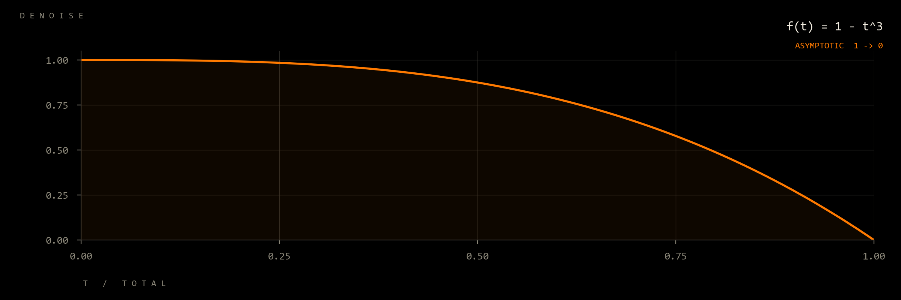
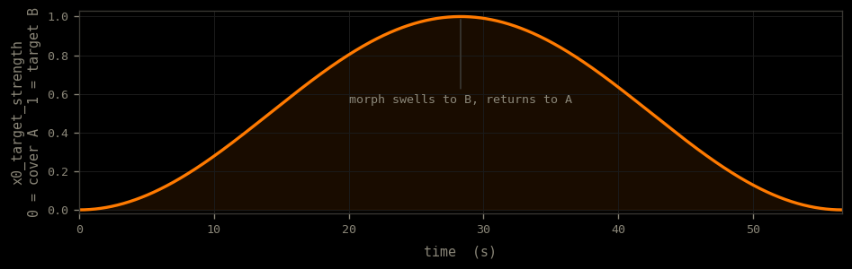

Diffusion Engine for Musical Orchestrated Noise
Streaming Diffusion Engine for Real-Time Music Generation
DEMON is a streaming diffusion engine for music, built on ACE-Step v1.5 (2 B turbo and 5 B XL turbo). A ring buffer of in-flight generations, each carrying its own per-slot timestep schedule, is advanced by one batched decoder forward pass per tick; after warmup, at full pipeline depth, every tick produces a finished song latent. Every solver-side parameter (per-frame source preservation, velocity scaling, ODE noise injection, classifier-free guidance, x0-target morphing, channel gain) accepts a scalar or a per-frame curve at the latent's 25 Hz frame resolution, and a shared-mutable-curve lane propagates parameter changes to every in-flight slot on the next tick, independent of pipeline depth. Native TensorRT engines cover 60, 120, and 240 s song lengths; longer songs route through a sliding 60 s window. The decoder runs under TensorRT with a refit-enabled engine that hot-swaps LoRAs without rebuild.
Four captures of the running engine under different configurations: live timbre and denoise under a blend between two prompts, live timbre/structure/denoise on the 5 B XL model, a live LoRA refit, and an LLM agent driving the controls through the MCP server. Each clip plays the audio the engine generated.
Timbre and denoise driven live, with the conditioning blended between two text prompts: acoustic deep house and a daft-punk four-to-the-floor.
The XL-turbo (5 B) checkpoint with timbre, structure, and denoise manipulated live as the song plays.
Alternative-rock and funk LoRAs refit live into the running TensorRT decoder, with no engine rebuild.
An LLM agent driving the engine through DEMON's MCP server: it reads the live control values, then writes denoise, structure, timbre, and prompt-blend updates on a two-bar cadence to evolve the remix in real time.
These are the experiments whose results you have to hear. The full evaluation (latency, throughput, cross-GPU benchmarks, quality metrics) is in the paper; a handful of findings, though, only really land as audio. Each isolates one property of the engine: streaming parity, per-frame SDE source preservation on a shared asymptotic curve, per-tick scalar denoise on the same curve, per-slot continuity vs. a global-reset baseline, and a per-frame latent morph driven through the shared mutable state.
Bit-identical 8-step latents decoded two ways. The batch path runs a single full 60 s VAE decode; the stream path replays the same latents tick-by-tick through a 5 s windowed decode, mirroring the live pipeline. Same fixture (low-fi loop), deathstep LoRA active in both.
The shared asymptotic curve below, driven into the SDE step's per-frame source-preservation parameter at the latent's 25 Hz frame resolution. The model runs free for most of the clip, then lands back on the source-anchored side in the final seconds. One generation per fixture, each with its paired LoRA.

Same trajectory, different lane: the streaming pipeline's per-tick scalar denoise input is driven along 1 − (k/N)³ instead of the per-frame SDE parameter. One fresh 0.3 s playback chunk per tick. Holds the model's free response (denoise ≈ 1.0) for most of the run and collapses back to the source as the sweep ends.
Illustrative pair built around a denoise switch (1.0 → 0.5). Under DEMON's per-slot scheduling the output stays continuous across the drain; a StreamDiffusion-style global reset incurs ~648 ms of dead air while the depth = 8 ring buffer refills. Matches the 60/60 vs. 1/60 completion-rate result in the paper.
Two cover variants of one source, A (deathcore) and B (ambient), share seed and structure, so their latents stay aligned. The x0_target_strength field, read from the same shared mutable registry every slot consults each step as the SDE curve, is driven as the per-frame swell below: it blends each frame's x0 prediction toward B's precomputed latent, gated to the refinement half of the schedule. The song swells from A into B and back, in a single generation. The blend is convex between two clean latents, so it stays inside the manifold: no re-noising, no artifact.

x0_target_strength swell — written once into the shared registry, read by every in-flight slot on every step; convex blend toward target B.Measured on RTX 5090 (32 GB), ACE-Step v1.5 turbo (2 B), 8 denoising steps, flow shift 3.0, windowed VAE decode at 3 s, 60 s source. Pipeline depth trades end-to-end throughput against control latency.
| Metric | depth = 1 | depth = 4 | depth = 8 |
|---|---|---|---|
| Throughput (gen/s) | 8.9 | 11.3 | 12.3 |
| Per-tick latency | 14.0 ms | 42.8 ms | 81.1 ms |
| Submission-time parameter convergence | 112 ms | 471 ms | 649 ms |
| Shared-curve latency | 1 tick | 1 tick | 1 tick |
| Per-frame control resolution | 25 Hz (40 ms) | ||
| VAE windowed decode (3 s) | 7 ms | ||
| LoRA refit | 1.2 s, no engine rebuild | ||
DEMON is the runtime, control surface, and acceleration layer; the diffusion model is ACE-Step v1.5, released by the ACE-Step team under MIT. The engine maintains a ring buffer of in-flight generations at staggered denoising stages. Crucially, each in-flight slot carries its own denoise scalar and its own timestep schedule: one batched decoder forward pass per tick advances slots that are simultaneously at different stages of different schedules. Native TensorRT engines cover 60, 120, and 240 s song lengths; longer songs route through a sliding 60 s window that advances at chunk boundaries.
Two control lanes coexist. Submission-time parameters (text conditioning, source audio, denoise) enter the pipeline when a new request is submitted and reach the next emptied slot within one tick; they then take effect over that slot's remaining schedule. Step-time parameters (per-frame source preservation, x0-target morph, velocity scaling, ODE noise injection, channel gain, guidance, CFG rescale, APG momentum, DCW scalers) live in a shared mutable registry that every slot reads on every forward pass; writing to that registry takes effect on the next tick for every in-flight slot at once, regardless of pipeline depth. The decoder runs under TensorRT with refit enabled, so LoRA deltas are written into the live engine without a rebuild. The paper covers the SDE derivation behind the per-frame source-preservation curve, the windowed-decode receptive-field analysis, and the TensorRT precision recipe.
Demo and infrastructure: Gioele Cerati, Hunter Hillman, Rafal Leszko, Marco Tundo.
ACE-Step v1.5 — the base diffusion model, VAE, text encoder, and semantic LM. Architecture, training, weights, and turbo distillation are the work of the ACE-Step team, released under MIT.
StreamDiffusion — ring-buffer streaming pattern for image diffusion (Kodaira et al., 2023), adapted here for long music latents.
DCW — Differential Correction in Wavelet domain, a post-step correction for flow-matching samplers (Yu et al., CVPR 2026), ported from ACE-Step 1.5 v0.1.7.
If you use DEMON, please cite both DEMON and the underlying ACE-Step model.
@software{fosdick2026demon,
author = {Fosdick, Ryan},
title = {DEMON: Diffusion Engine for Musical Orchestrated Noise},
year = {2026},
url = {https://github.com/daydreamlive/DEMON}
}
@article{acestep2026,
title = {ACE-Step 1.5: Pushing the Boundaries of Open-Source Music Generation},
author = {Gong and others},
journal = {arXiv preprint arXiv:2602.00744},
year = {2026}
}